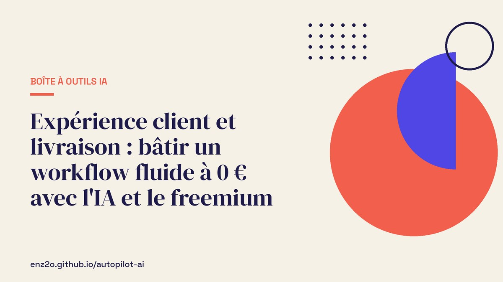

Expérience client et livraison : bâtir un workflow fluide à 0 € avec l'IA et le freemium
2026-11-19
Article contenant des liens affiliés.

Quand on débute en freelance, que l'on propose ses premiers services en tant qu'étudiant ou que l'on commence à monétiser son audience, un paradoxe frappe presque toujours : le cœur de notre métier ne représente souvent que 40 % de notre temps. Le reste s'évapore dans la logistique administrative, les e-mails d'ajustement, les réunions de cadrage évitables et le suivi approximatif des livrables.
Beaucoup d'indépendants pensent que résoudre cette friction impose d'investir dans une suite logicielle coûteuse. Pourtant, il est tout à fait possible de bâtir un parcours client fluide, rassurant et professionnel sans débourser un centime.
En combinant des modèles d'intelligence artificielle accessibles gratuitement et quelques outils freemium bien articulés, vous pouvez structurer chaque étape de votre relation client, du premier contact jusqu'au témoignage final.
1. Cadrer le besoin : transformer un échange brouillon en brief limpide
Le principal piège d'un projet freelance réside dans le malentendu initial. Le client exprime un besoin flou, vous pensez l'avoir compris, puis les allers-retours s'accumulent au moment de la livraison.
Pour verrouiller le périmètre sans y passer des heures : - Prenez des notes brutes pendant votre premier appel de découverte, sans vous soucier de la syntaxe. Notez les objectifs chiffrés, les craintes du client et les contraintes de calendrier. Pour rester concentré sans taper bruyamment sur votre clavier, un support physique simple comme un carnet de notes ligné professionnel reste l'une des solutions les plus fiables pour capturer l'essentiel sans distraction. - Mobilisez une IA gratuite (ChatGPT, Claude ou tout autre grand modèle en version d'accès libre) en lui soumettant votre brouillon avec une instruction précise : « Agis en chef de projet senior. À partir de ces notes brutes, rédige une proposition de projet structurée comprenant : Contexte, Objectif principal, Périmètre strict (ce qui est inclus et ce qui est expressément exclu), Livrables attendus et Calendrier prévisionnel. »
En moins de deux minutes, vous obtenez un document de cadrage clair. Relisez-le attentivement, ajustez le ton et renvoyez-le au client pour validation écrite. Ce simple geste évite 90 % des litiges sur le périmètre de travail.
2. Accueillir le client : l'onboarding sans friction
Une fois la proposition validée, la phase d'accueil (l'onboarding) donne le ton de la collaboration. Envoyer six e-mails séparés avec des pièces jointes et des demandes d'accès donne une image amateur et génère du stress pour les deux parties.
Pour centraliser cette étape à moindre coût : - Créez une page d'accueil projet ou un portail simple. Vous pouvez utiliser une plateforme intégrée comme Systeme.io, qui propose un plan gratuit suffisant pour héberger des ressources, des formulaires de collecte d'informations et même un espace membre privé si vous livrez des ressources ou des formations d'accompagnement. - Standardisez votre questionnaire de démarrage : demandez les accès (outils, charte graphique, comptes de test) via un formulaire unique. L'IA peut vous aider à lister en amont les prérequis techniques indispensables selon votre secteur (graphisme, rédaction, développement, conseil). - Envoyez un e-mail de bienvenue automatisé contenant un récapitulatif du calendrier et le lien vers leur espace dédié. Le client constate immédiatement votre niveau d'organisation.
3. Produire et communiquer en mode asynchrone
L'un des plus grands voleurs de productivité est la réunion de synchronisation de 45 minutes pour valider un détail de conception. Pour protéger votre concentration et avancer sereinement, privilégiez au maximum le travail asynchrone.
Réduire les interruptions sonores
Travailler efficacement sur ses livrables demande des blocs de concentration ininterrompus. S'isoler des bruits ambiants avec un casque antibruit sans fil confort permet d'entrer plus vite dans un état de flow, particulièrement si vous partagez votre espace de travail ou travaillez depuis un café.
Utiliser la vidéo courte plutôt que la réunion
Au lieu d'organiser un appel pour présenter une ébauche : - Enregistrez votre écran pendant 3 à 5 minutes via un outil freemium (Loom ou Tella en version gratuite). - Expliquez vos choix créatifs ou techniques en direct. - Demandez au client de regrouper ses remarques par écrit sous la vidéo.
Nettoyer et hiérarchiser les retours avec l'IA
Lorsque le client vous envoie un long message décousu avec une dizaine de remarques éparses, ne réagissez pas à chaud. Copiez le texte dans votre assistant IA avec ce prompt :
« Synthétise ces commentaires clients sous forme de tableau à 3 colonnes : 1. Modification demandée, 2. Priorité (Bloquante / Confort), 3. Action concrète à réaliser. Ignore les répétitions et neutralise le ton émotionnel. »
Vous transformez instantanément une source d'anxiété en une liste de tâches exploitable.
4. Livrer le projet et gérer le paiement sans intermédiaire coûteux
La remise du travail final doit être un moment gratifiant, pas une corvée administrative. Trop de freelances envoient un lien de téléchargement temporaire dans un e-mail perdu, ce qui génère des relances plusieurs mois plus tard.
Pour professionnaliser la livraison : - Structurez un espace de remise clair : déposez les fichiers finaux, les guides d'utilisation et les licences dans un dossier partagé pérenne ou au sein d'une page dédiée. - Associez la livraison à la facturation : avec un outil tout-en-un tel que Systeme.io, vous pouvez lier la validation d'un paiement à l'ouverture automatique de l'accès aux livrables numériques, évitant ainsi les impayés et les manipulations manuelles. - Rédigez la note de fin de projet avec l'IA : préparez un document récapitulant ce qui a été accompli, la mesure des résultats attendus et des recommandations pour la suite. Ce document montre que vous ne vous contentez pas d'exécuter, mais que vous apportez une réelle valeur stratégique.
5. La boucle post-projet : récolter la preuve sociale
Le travail ne s'arrête pas au moment où le solde est réglé. Le meilleur moment pour obtenir un témoignage percutant se situe dans les 48 heures suivant la livraison, quand l'enthousiasme du client est au plus haut.
Voici une méthode simple pour ne plus oublier cette étape cruciale : 1. Préparez un modèle d'e-mail de satisfaction : utilisez l'IA pour générer 3 questions ouvertes simples (ex. : « Quel était votre plus grand défi avant notre collaboration ? Qu'avez-vous particulièrement apprécié dans la méthode ? Quels résultats observez-vous déjà ? »). 2. Automatisez la relance : configurez une séquence d'e-mails différée grâce aux fonctionnalités gratuites de Systeme.io, programmée pour partir 3 jours après la remise du projet. Si le client ne répond pas, un rappel cordial part automatiquement une semaine plus tard. 3. Transformez les retours en étude de cas : soumettez les réponses du client à votre modèle de langage en lui demandant de restructurer le témoignage sous la forme « Problème - Solution - Résultat » prête à être insérée sur votre portfolio ou votre profil LinkedIn.
En résumé : la rigueur prime sur le budget
Créer une expérience client mémorable ne requiert pas un abonnement mensuel à trois chiffres. En combinant judicieusement des requêtes d'IA bien ciblées pour la synthèse et la rédaction, et une plateforme freemium pour centraliser vos pages, formulaires et automatisations, vous offrez à vos clients un accompagnement digne d'une agence établie.
Commencez par appliquer ce workflow sur votre prochain projet : cadrez par écrit avec l'IA, utilisez des vidéos asynchrones pour vos présentations, et automatisez la collecte de votre premier témoignage.